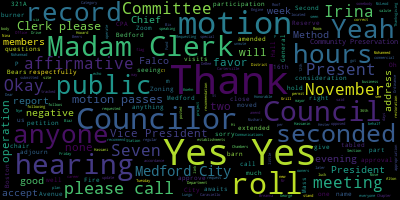

[Caraviello]: Good evening, everyone. The 36th regular meeting of the Medford City Council, November 16th, 2021. Madam Clerk, please call the roll. Council Bix. Present. Council Falco. Present.
[SPEAKER_02]: Vice President Nance. Present. Council Nance.
[Caraviello]: Present.
[SPEAKER_02]: Council Morales.
[Nina Nazarian]: Present.
[SPEAKER_02]: Councilor Scarpelli.
[SPEAKER_00]: Present.
[Caraviello]: He's on Zoom.
[SPEAKER_00]: I'm present. Do you hear me, Rick?
[Caraviello]: Present. Seven, all present, please stand and salute the flag.
[SPEAKER_02]: I pledge allegiance to the flag of the United States of America, and to the republic for which it stands, one nation under God, indivisible, with liberty and justice for all.
[Caraviello]: Hearings. 2-1-574-St. Bedford, also a public hearing. Medford City Council will hold a public hearing in the Howard F. Alton Chambers at Medford City Hall, 85 George P. Hester Drive, Bedford via Zoom on Tuesday, November 16th, 2021. A link will be posted no later than Friday, November 12th, 2021, on a petition from Mushari and Grill, Mohammed and Irina Hassanin, 321A Boston Avenue, Medford, Mass., for a special permit to amend its hours of operation in accordance with the Method Zoning Ordinance, Chapter 94, Section 94-145, to operate extended hours at its business at 321A Boston Avenue, Method, said site being located in the commercial C1 Zoning District as follows. Extended hours of operation requested, 11 p.m. to 2 a.m., seven days per week. Petition and plan may be seen at the Office of City Clerk, Room 103, Medford City Hall, Method Mass. Okay, well, this is a public hearing. Do we have, I see, it would be Irina, Irina? Oh, could you, hold on. Could you unmute yourself, please?
[SPEAKER_05]: Yeah, Irina's here, and Mohammed.
[Caraviello]: Hi. Well, this is a public hearing. Is anyone here speaking in favor of that? That would be you, correct, Irina? Are you in favor? Yeah. Thank you. Yeah, can we have your name and address of the record, please?
[SPEAKER_05]: Irina Shvets.
[Caraviello]: Mohammad Hassani. And the address, please?
[SPEAKER_05]: 321 Boston Avenue, Medford. OK.
[Caraviello]: All right, thank you very much. Hearing and seeing none, anyone else in favor? We'll close that part of the meeting. Is there anyone here that is opposed to the hours of operation? Hearing and seeing none, we'll close that part of the meeting. Okay, so, Irina, would you like to give us just a little update on your hours of operation there?
[SPEAKER_05]: Yeah, so we've been open for the last month and we've noticed until 11, we've noticed that on the weekend days, so Thursday through Friday, there's been a demand for late night food and there's not many places open. So we wanna offer our customers a healthy food choice. So most likely we would only be open past 11 on Thursday, Friday and Saturday.
[Caraviello]: Thank you. Do any of the councilors have any questions for the owners of the establishments? No questions. The chair awaits a motion. The motion by vice president for approval, seconded by councilor Beers. All those in favor. We got a roll call. Councilor McLeod. We have to roll call.
[SPEAKER_00]: Sorry. Sorry everyone.
[Caraviello]: Thank you. Madam Clerk, would you please call the roll?
[SPEAKER_02]: Yes.
[Caraviello]: Yes.
[SPEAKER_02]: Yes. Yes. Yes. Yes.
[Caraviello]: Yes. Yes. Seven affirmative. None of the negative motion passes the career. Thank you very much and good luck on your new hours.
[SPEAKER_05]: Thank you so much.
[Caraviello]: Thank you. Thank you. Okay. Communications from the mayor. 2, 1, 6, 1, 8, November 11, 2021, to President Caraviello and all members of the Medford City Council. Dear President Carterville and members of the City Council, on behalf of the Community Preservation Committee, I respectfully request and recommend that your Honorable body approve the following recommendation of the Community Preservation Committee. Requesting the appropriation of $120,000 from the CPA General Reserve, the Medford Fire Department for the restoration of Fire Station Engine Roof 4. The project will be tracked in the Community Preservation Fund by Category General Reserve. Thank you for your consideration. Consideration respectfully submitted. Breanna Lungo-Koehn. Do we have somebody from the CPA here? No.
[Nina Nazarian]: Mr. President.
[Caraviello]: Name and address of the record please, Nina.
[Nina Nazarian]: Thank you very much. Nina Nazarian, Interim Chief of Staff, 85 George P. Hassett Drive, Medford. I'm here also with Chief Frank Gilberti and Deputy Chief John Freedman, soon to be Chief Freedman. Happy to go through this matter. The Community Preservation Committee Representative Chairwoman Cameron was at the Committee of the Whole meeting where we had some opportunity to discuss the project, and I don't know to what extent you, Mr. President, would like us to go through that for this evening. I know it was referred out of committee, so I look to you for further guidance.
[Caraviello]: Thank you. Move to approve, Mr. President. So on the motion by Vice President Nye for approval, seconded by? Second. Seconded by Councilor Biaz. Madam Clerk. As amended. As amended. Madam Clerk, please call the roll.
[SPEAKER_02]: Councilor Biaz.
[Caraviello]: Yes. Councilor Falco.
[SPEAKER_02]: Yes.
[Caraviello]: Yes.
[Caraviello]: Yes. Yes. Yes, 70 affirmative, none negative, motion passes.
[Nina Nazarian]: Thank you very much, Mr. President, members of the council, we appreciate it.
[Caraviello]: Thank you. Thank you, Chief, and Chief DeBee.
[SPEAKER_00]: Thank you, Mr. President, and thank you to all the council members, much appreciated, thank you.
[Caraviello]: And you have a good Thanksgiving, Chief.
[SPEAKER_00]: And same to you and everyone in the Council of Chambers. Thank you.
[Caraviello]: And I echo also. Thank you. Thank you, sir. Reports of committees, 2-1-6-1-1, November 9th. Committee of the whole report. This was in regards to the CAF classification, which has been tabled for two weeks. Motion to accept. So moved. On the motion by Councilor Bears, seconded by Vice President Knight. Madam Clerk, please call the roll.
[SPEAKER_02]: Councilor Bears?
[Caraviello]: Yes.
[SPEAKER_02]: Councilor Falco?
[Caraviello]: Yes.
[SPEAKER_02]: Vice President Knight?
[Nina Nazarian]: Yes.
[Caraviello]: Yes. Yes. 7 in the affirmative. Motion passes. 2-1-6-0-0 and 2-1-6-0-1. This was for the two house visits. I mean, the two street visits that we did a couple of weeks ago. Yes. No, I'm sorry.
[Falco]: No, I'm sorry.
[Caraviello]: This is the one we did on Wednesday. Yeah, I'm sorry. I apologize. Yeah. Yeah, yeah. Motion to accept the committee report. So moved. Motion by council members to accept, seconded by councilor Falco. Madam clerk, please call the roll.
[Caraviello]: Yes. Yes, seven in the affirmative and a negative motion passes. Public participation. Would anyone like to speak in public participation?
[Falco]: You wanna speak?
[Caraviello]: I'm gonna take two. Okay. Does anyone have anything else this evening? Records. Records. The records were passed to... One barn burner, John, give us a barn burner. Oh, we didn't receive them, right.
[Falco]: Mr. President, I did not receive the records in my package. I checked with a couple of my colleagues, they didn't either.
[Caraviello]: Okay, so the records will be tabled for the next meeting.
[Falco]: You get tabled for one week until I receive a hard copy, then at that point, I'd be able to- Thank you. We didn't receive a hard or soft copy of the records.
[Caraviello]: Thank you. Before we adjourn, anyone have anything else to for this evening? Chair awaits a motion. Second. Motion by Vice President to adjourn. Seconded by Councilor Bears. Madam Clerk, please call the roll. Yes.
[SPEAKER_02]: Yes.
[Caraviello]: Yes. Yes. Yes. Seven in the affirmative, motion passes. Meeting adjourned.
|
total time: 6.63 minutes total words: 842  |
total time: 0.29 minutes total words: 61 |
||
{kind=link}
{kind=link}